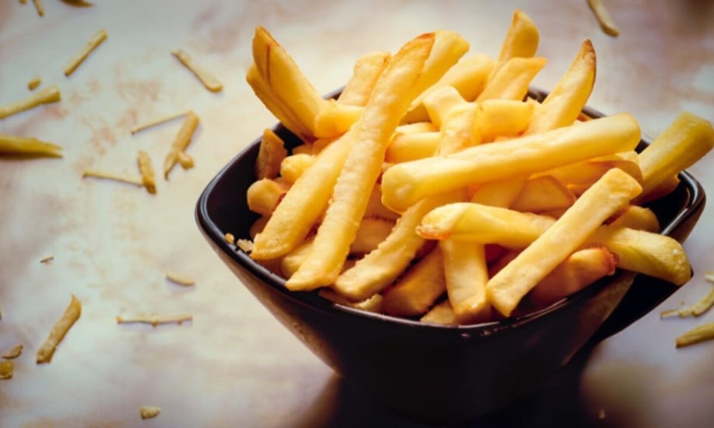

CASO CURIOSO #1: ¿De dónde nace la Smash Burger?
La técnica de “aplastar” la carne sobre la plancha no es casualidad: carameliza al máximo y concentra sabor. Te contamos el origen y cómo la hacemos en WallEat.
Ver caso
Noticias y curiosidades de WallEat
Promos, historias de cocina y datos curiosos para amantes de la comida.
La técnica de “aplastar” la carne sobre la plancha no es casualidad: carameliza al máximo y concentra sabor. Te contamos el origen y cómo la hacemos en WallEat.
Ver caso
¿Doble fritura? ¿Remojo? ¿Temperatura? Repasamos trucos sencillos que usamos para lograr papas doradas por fuera y suaves por dentro.
Ver caso